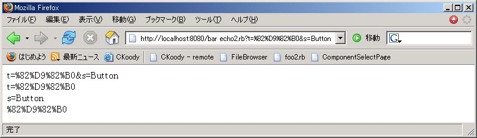
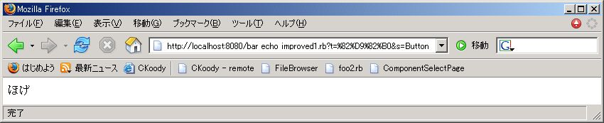
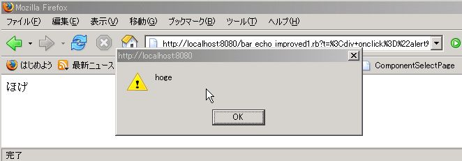
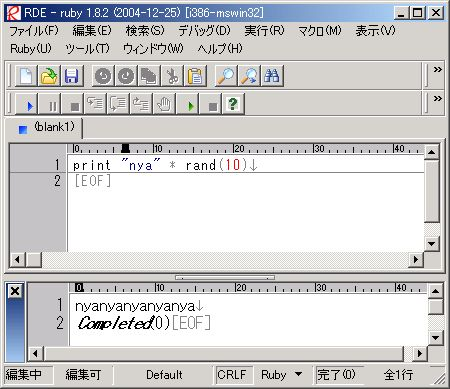

Ruby ビギナーのための CGI 入門 【第 2 回】 ページ 3
山彦もどき改
前ページの「山彦もどき」では読者が入力した情報を受け取ることが出来ました。 ここでは「山彦もどき」を改良して「山彦もどき改」にしていきます。 「山彦もどき改」の改良点は大まかに言って 2 つあります。
1 つ目の改良点はフォームに漢字などの アルファベットや数字以外の文字が入力された時に その内容がきちんと表示される点です。 後で実際に入力してみますが、「山彦もどき」では ひらがな・カタカナ・漢字などを入力しても正しく表示されません。 「山彦もどき改」ではこの制限を取り払います。
2 つ目の改良点は読者がフォームに HTML タグを入力した時の処理です。 通常なら HTML タグを入力しても問題はないのですが、 例えば、Javascript を含んだ HTML が入力されると 困ったことになります。 そこで、HTML の入力を出来ないようにします。
細かい改造ですが、秘密のメッセージ機能を追加してみます。 これはフォームに特定のキーワードが書かれた時に プログラムに用意された秘密のメッセージを表示させます。
フォームデータの受け取り と CGI クラス
まずは「山彦もどき」でアルファベットや数字以外の文字を入力してみましょう。 http://localhost:8080/bar_echo2.html にアクセスして フォームにアルファベットや数字以外の文字を入力してみて下さい。 
上の図は「ほげ」をフォームに入力して サブミットボタンを押した時の結果です。 bar_echo2.rb だと「ほげ」の部分が 「%82%D9%82%B0」になってしまいますね (お使いのブラウザによっては表示が違うかもしれません)。
先程、フォームデータが作られる時には前処理が行われると書きました。 その前処理の時、ある規則に従って「ほげ」を変換すると「%82%D9%82%B0」になります。 今の皆さんが自力でこの処理を行うのは正直言って難しいと思います。 そこで、自分で処理するのは諦めて CGI プログラミングを支援する仕組みを使ってこの問題を解決することにします。
CGI クラスの準備
CGI プログラミングを支援する仕組みのことを CGI クラスと言います。 今号では CGI クラスの詳しい説明はしませんが、 CGI プログラミングに便利な機能が集まっているところと 考えてもらえば十分です。 CGI クラスを使うと比較的簡単に前述のフォームデータの処理を行えます。
CGI クラスを使うためには準備が必要なので、 まずはその準備を済ませます。 CGI クラスを使う前には
require "cgi"という行が必要になります。 この行は CGI クラスを使う前に入れておかなければなりません。 require の説明はいずれ詳しく行いたいと思いますが、 とりあえず何か便利な機能を追加したい時に使う命令 ということを覚えておいて下さい。
CGI クラスを使ってフォームデータを取得する
CGI クラスを使ったプログラムを見てみましょう。 http://localhost:8080/bar_echo_improved1.html を表示させ、 フォームに日本語を入れて bar_echo_improved1.rb を実行させてみて下さい。 今度はちゃんと日本語でも表示されるはずです。
bar_echo_improved1.rb
#!/usr/local/bin/ruby
require "cgi"
print "Content-Type: text/html\n\n"
print "<html><head></head><body>"
c = CGI.new
text = c["t"]
print text
print "<br>"
print "</body></html>"

文字化けする場合はブラウザの文字コード設定を変えてみて下さい。 IE ならメニューの 表示 → エンコード の中に 日本語という項目が幾つかあるので、 それを順に選択していけばどれか 1 つはきちんと表示されるはずです。 Firefox ではメニューの 表示 → 文字コードの中にあります。
きちんと表示されたところで 日本語対応版「山彦もどき改」の説明をしましょう。 まず 3 行目は先程も言ったように CGI クラスを使うための準備です。 8 行目は初めて見ますね。この行の CGI.new は CGI クラスにフォームのデータを作るようにお願いしています。 CGI クラスには CGI プログラムのための便利な機能が 集まっていると先程説明しました。 その機能の 1 つがフォームのデータを作ることです。
難しい事は抜きにして __CGI.new でフォームのデータが作られる__ということを覚えて下さい。 CGI.new で作られたフォームのデータは Hash のようになっていて、 そのデータには「フォームの部品の name 属性」と 「その部品のデータ (value 属性)」の組みが含まれています。 CGI.new で作られたフォームデータの中身を図示すると下のようになります。
| “t” | ”s” |
| “ほげ” | “Button” |
フォームに「ほげ」と入力したので、 t という name 属性のテキストフィールドには「ほげ」という値が、 s という name 属性のサブミットボタンには「Button」という value 属性が 対応することになります。
ここまで CGI.new で作られたデータの事をフォームのデータと書いてきましたが、 今後は「CGI のデータ」と書くことにします。 これにはちゃんと理由があるのですが、説明がちょっと難しいので、 ここではそのことには触れないでおきます。
次の 9 行目で c[“t”] としていますね。 この行では CGI のデータのうち name 属性が t の部品データにアクセスしています (この場合は「ほげ」という文字列ですね)。 この行から分かるように CGI データの__フォームデータには name 属性を使ってアクセスします__。 アクセスの仕方は Hash や ENV と同じで [] を使います。 フォームデータへのアクセス方法が「山彦もどき」と違いますが、 プログラムはこちらの方が簡単ですね。
CGI.new で CGI データが作られる時に 「%82%D9」のようなデータはきちんと日本語になります。 これで日本語表示が出来るようになりました。
フォームに入力された HTML タグ
次はフォームに HTML タグが入力された時、 そのタグをどう扱うかです。 皆さんご存知無いかもしれませんが、 フォームに入力された HTML タグをそのまま 表示させると困ったことになります。 http://localhost:8080/bar_echo_improved1.html を開いて、 下のような内容をテキストフィールドに書いて サブミットボタンを押してみましょう。
<div onclick="alert('hoge')">ほげ</div>ページが表示される時は ただ「ほげ」と表示されているだけですが、 表示された「ほげ」をクリックすると 「hoge」というメッセージが出現します。 これはフォームに入力された HTML タグの中に Javascript が含まれていることが原因です。 
Javascript を使えば色々なことが出来るので、 Javascript を含んだ HTML のタグを受け付けてしまうと、 自分のサイト (場合によってはインターネット全体) が不利益を受けます。 これを防ぐためには、ページの読者が書いた HTML タグは 機能しないようにするのが無難です。
HTML エスケープ - escapeHTML 命令
この処理も CGI クラスを使えば簡単に出来ます。 HTML タグを受け取らないようにするには HTML の規約に従って「<」「>」等を「<」「>」等に変えます。 この処理は HTML のエスケープと言われていて、 ブラウザは エスケープされた HTML タグを HTML タグとして認識しません。
CGI クラスの機能の escapeHTML 命令を使えば HTML エスケープされた文字列を作れます。 使い方は下のようにします。 split と同じように括弧の中身がパラメーターになります。 パラメーターには HTML エスケープしたい文字列を指定します。
CGI.escapeHTML( HTMLタグを含んだ文字列 )下のプログラムを RDE に入力して escapeHTML を試してみましょう。 図のように 「<」「>」はそのまま表示されません。
require 'cgi'
puts CGI.escapeHTML("<html></html>")
puts CGI.escapeHTML("<body><div></div></body>")
「山彦もどき改」で HTML エスケープを使う
escapeHTML 命令を使った「山彦もどき改」は 下のようになります。
#!/usr/local/bin/ruby
require "cgi"
print "Content-Type: text/html\n\n"
print "<html><head></head><body>"
c = CGI.new
text = CGI.escapeHTML(c["t"])
print text
print "<br>"
print "</body></html>"
元のプログラムとの違いは 9 行目だけです。 説明が長いくせに修正は 1 行だけなので、 拍子抜けするかもしれませんね。 c[“t”] の値を CGI.escapeHTML で HTML エスケープしています。
http://localhost:8080/bar_echo_improved2.html にアクセスして
試してみて下さい。
余裕のある人はテキストフィールドに色々なデータを入力して、
2 つの CGI プログラムの結果を HTML のソースで比較し、
その違いを探してみましょう。

秘密のメッセージ
このあたりで CGI プログラムに簡単な仕掛けでも入れてみましょう。 いつも律儀にフォームの内容を返しても 面白くありませんからね。
仕掛けはごく単純です。 まずあらかじめキーワードを決めておきます。 そして、そのキーワードがフォームに入力されたら、 プログラムに用意された秘密のメッセージと猫の絵を表示させます。 この仕掛けには既に紹介した if 文と rand 命令を利用します。
bar_echo_improved3.rb
#!/usr/local/bin/ruby
require "cgi"
print "Content-Type: text/html\n\n"
print "<html><head></head><body>"
arr = ["nya", "nyan", "fuu", "nobi", "suya"]
c = CGI.new
text = CGI.escapeHTML(c["t"])
if text == "bar"
i = rand(5)
s = arr[i]
print i
print "<br>"
print s
print "<br>"
print s * rand(10)
num = rand 7
print "<br>"
print "<img src=\"images/#{num}.jpg\"></img>\n"
else
print text
print "<br>"
end
print "</body></html>"
if 文とフォームデータ
bar_echo_improved3.rb はページの読者がフォームに「bar」と入力した場合に、 秘密のメッセージを猫の写真と一緒に表示させます。 bar_echo_improved3.rb は基本的に bar_echo_improved2.rb と同じなので、 違う部分だけを説明します。
12 行目で if 文を使っています。 この行でフォームに入力されたデータが “bar” と同じかどうかをチェックします。 つまり、”bar” がキーワードになるわけです。 「==」は等号の左と右が同じデータかどうかを調べる方法でしたね。
同じデータでない場合は 24, 25行 が実行されます。 こちらは「山彦もどき」と同じ動作ですので、説明は要らないと思います。
フォームに書かれたデータが bar だった場合、 13-22 行が実行されます。 こちらで秘密のメッセージを表示したり、猫の絵を表示したりします。
文字列と「*」
8 行目で秘密のメッセージを変数 arr に用意しています。 メッセージは何でも良いのですが、 このプログラムでは Array に 5 つのメッセージが用意されています。
13 行目では rand 命令の結果に変数 i の目印が付きます。 この変数 i が表示する秘密のメッセージを決定します。 なぜなら、14 行目で変数 i の値を変数 arr の Array の添字としており、 その添字に対応するメッセージが後で表示されるからです。 例えば、rand 命令の結果が 0 だとすれば、 表示されるメッセージは 変数 arr の 0 番目の “nya” となります。 また、ここでは表示されるメッセージには変数 s の目印が付きます。
bar_echo_improved3.rb のように rand(5) とすると、 その結果は 0-4 のいずれかになります。 変数 arr のデータ数は 5 個なので、 0-4 は変数 arr の Array の添字として使えます。 もし、秘密のメッセージの個数を変える時は rand のパラメーターも変更しなければなりません。
15-18 行は rand の結果や Array から取り出したメッセージを 表示させているだけです。
19 行目は少し難しいですね。 ゆっくり考えてみましょう。 例えば、13行目で rand の結果が 0 になったとしましょう。 そうすると、変数 i は 0 への目印に、 変数 s は “nya” への目印になります。 この時、19 行目は “nya” * rand(10) となります。 これはどういう計算なのでしょうか？ 試しに RDE で実行してみましょう。 
何回も実行させると分かりますが、 「nya」が繰り返し表示されますね。 文字列の後ろに「*」と数値が来ると、 文字列を数値の分だけつなげて下さいという意味になります。
下のプログラムでも試してみて下さい。
puts "hoge" * 2
puts "bar" * 3
puts "foo" * 10 + "bar" * 219行目は s * rand(10) なので、 rand の結果だけ変数 s のデータ(“nya” やら “nyan” やら)をつなげます。 その結果、同じメッセージが繰り返し表示されます。 20-22 行は分かりますね。 前号の foo5.rb と同じです。
実行結果
http://localhost:8080/bar_echo_improved3.html にアクセスして、
bar と入力してみて下さい。色んなメッセージや猫の絵が表示されると思います。